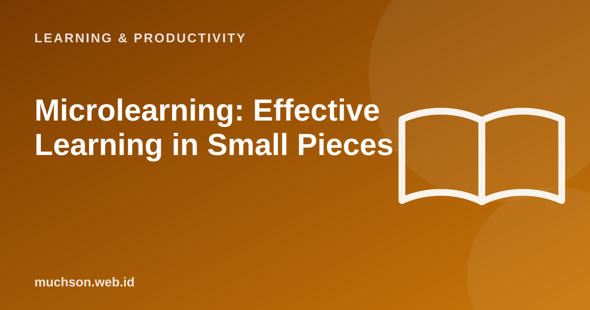

Not everyone has an hour to learn, but many have five minutes. Microlearning uses that: a short piece, one goal, ready to put into practice at once. But small pieces alone are not enough; the design makes the difference.
By Muhammad Muchson Attoyibi··1 min read

What is microlearning?
Microlearning is an approach that delivers material in small units, usually a few minutes, each focused on one learning goal. The form can be a short video, an infographic, a short quiz or a one-step exercise. It is widely used in employee training because it is flexible and easy to reach from a phone.
Figure 1. Ordinary learning and microlearningText description of the diagram
Long sessions
60-120 minutes at once
Many goals in one session
Hard to schedule
Suits complex topics
Easy to feel overwhelmed
Microlearning
3-10 minutes per module
One goal per module
Flexible, fits between other things
Suits specific skills
Easy to repeat
Work out how to split the material
Design principles
Its limits
Microlearning is good for specific skills and refreshers, and less suitable as the only way to teach interdependent topics that need deep understanding. Combine it with practice sessions and projects.
FAQ
What is the ideal length of a micro module?
Generally 3 to 10 minutes, depending on the material. What matters is one clear goal.
Does it suit school students?
It can serve as reinforcement and daily practice, combined with the main teaching with the teacher.
How do I measure success?
Look at completion, practice scores and application in real work or tasks, not just the number of views.
Share:
Muhammad Muchson AttoyibiSoftware engineer and academic trainer based in Malang, Indonesia. Writes about technology, learning, and practical everyday topics. About me